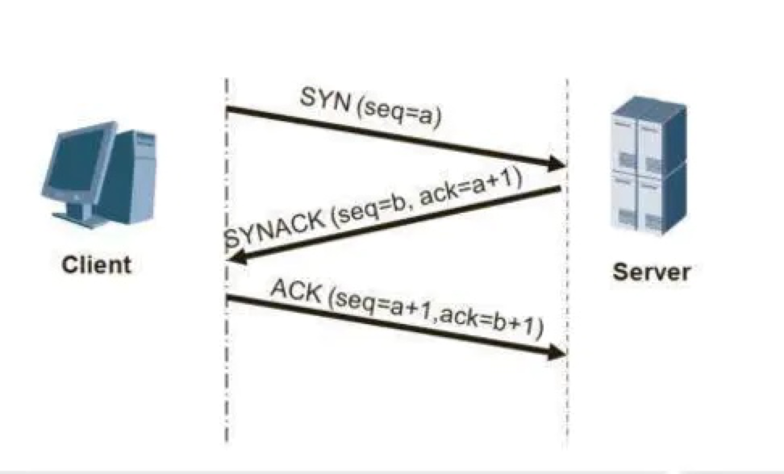
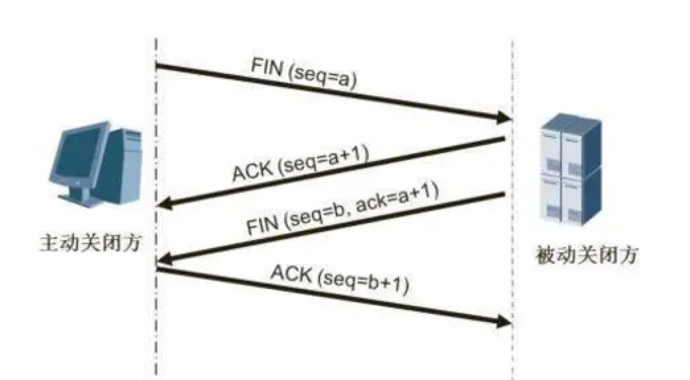

三次握手（three-way handshaking）
在Google Groups的TopLanguage中看到一帖讨论TCP“三次握手”觉得很有意思。贴主提出“TCP建立连接为什么是三次握手？”的问题，在众多回复中，有一条回复写道：“这个问题的本质是, 信道不可靠, 但是通信双发需要就某个问题达成一致. 而要解决这个问题, 无论你在消息中包含什么信息, 三次通信是理论上的最小值. 所以三次握手不是TCP本身的要求, 而是为了满足”在不可靠信道上可靠地传输信息”这一需求所导致的. 请注意这里的本质需求,信道不可靠, 数据传输要可靠. 三次达到了, 那后面你想接着握手也好, 发数据也好, 跟进行可靠信息传输的需求就没关系了. 因此,如果信道是可靠的, 即无论什么时候发出消息, 对方一定能收到, 或者你不关心是否要保证对方收到你的消息, 那就能像UDP那样直接发送消息就可以了.”。这可视为对“三次握手”目的的另一种解答思路
背景：TCP位于传输层，作用是提供可靠的字节流服务，为了准确无误地将数据送达目的地，TCP协议采纳三次握手策略。
原理：
- 发送端首先发送一个带有SYN（synchronize）标志地数据包给接收方。
- 接收方接收后，回传一个带有SYN/ACK标志的数据包传递确认信息，表示我收到了。
- 最后，发送方再回传一个带有ACK标志的数据包，代表我知道了，表示’握手‘结束。
通俗的说法
Client：嘿，李四，是我，听到了吗？
Server：我听到了，你能听到我的吗?
Client：好的，我们互相都能听到对方的话，我们的通信可以开始了。

四次挥手（Four-Way-Wavehand）
意义：当被动方收到主动方的FIN报文通知时，它仅仅表示主动方没有数据再发送给被动方了。但未必被动方所有的数据都完整的发送给了主动方，所以被动方不会马上关闭SOCKET,它可能还需要发送一些数据给主动方后，再发送FIN报文给主动方，告诉主动方同意关闭连接，所以这里的ACK报文和FIN报文多数情况下都是分开发送的。
原理：
- 第一次挥手：Client发送一个FIN，用来关闭Client到Server的数据传送，Client进入FIN_WAIT_1状态。
- 第二次挥手：Server收到FIN后，发送一个ACK给Client，确认序号为收到序号+1（与SYN相同，一个FIN占用一个序号），Server进入CLOSE_WAIT状态。
- 第三次挥手：Server发送一个FIN，用来关闭Server到Client的数据传送，Server进入LAST_ACK状态。
- 第四次挥手：Client收到FIN后，Client进入TIME_WAIT状态，接着发送一个ACK给Server，确认序号为收到序号+1，Server进入CLOSED状态，完成四次挥手
通俗的说法
Client：我所有东西都说完了
Server：我已经全部听到了，但是等等我，我还没说完
Server：好了，我已经说完了
Client：好的，那我们的通信结束l

作者：心如简_cc99
链接：https://www.jianshu.com/p/d3725391af59
来源：简书
著作权归作者所有。商业转载请联系作者获得授权，非商业转载请注明出处。